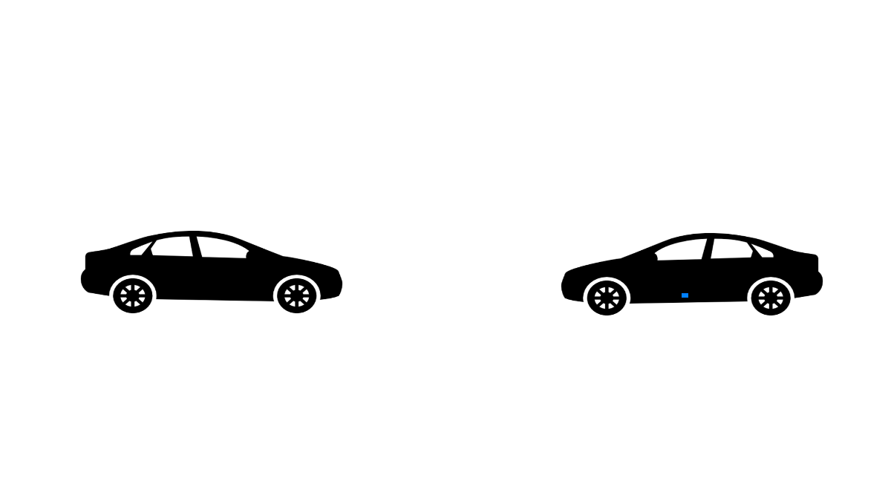
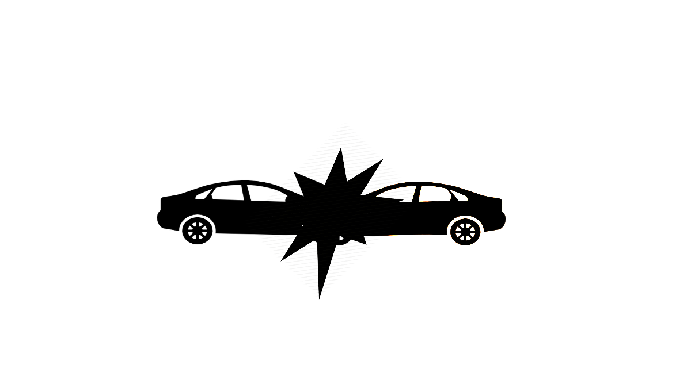
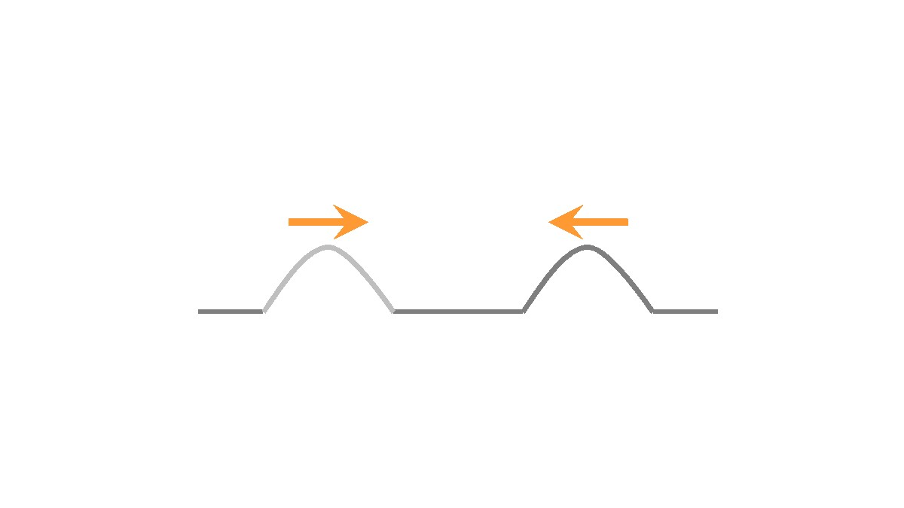
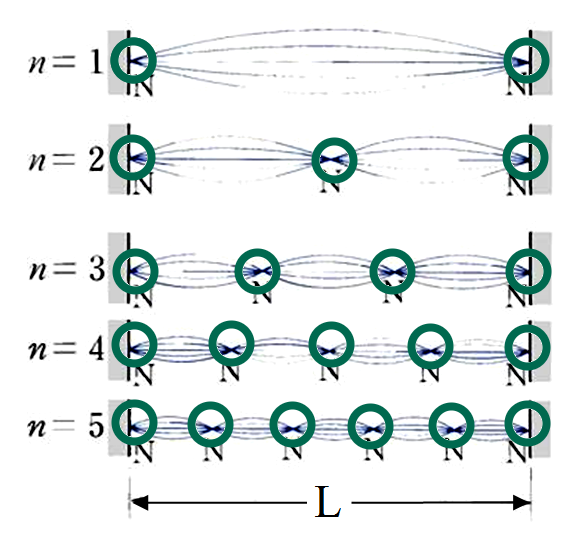

波動學
行波/駐波
引言
在波動學中，波可分為行波及駐波。
在了解行波和駐波前，我們需要先重溫波的本質。
- 波由震動產生
- 波是一種能量
波動相遇時的現象（叠加原理）
由於波的本質的能量，當兩個波相遇時會發生以下現象，我們將會以物質和波作比較。
| 物質 |  | → |  |
|---|---|---|---|
| 波 |  | → |  |
我們會稱以上的現象為叠加原理。
叠加原理的發現
同時，波根據叠加原理，我們發現波也可以互相抵消
行波與縱波的比較
重要概念： 行波傳遞能量，但不傳遞物質。 當行波經過一個物質時，該物質不會向外移動，只是在原來位置上下起伏 ---額外知識 駐波一般透過波的反射產生。 當繩子兩端固定，駐波只能在特定的頻率（形成穩定波形所需的最低頻率之整數倍）下形成。  繩子上不振動的質點稱為波節(紅圈)。 駐波的特性：質點均以 相同的頻率 振動，但 振幅卻各有不同。 |

總結
| 行波 | 駐波 | |
|---|---|---|
| 振幅 | 所有質點均相同 | 視乎位置而定 |
| 波長 | 相鄰波峰之間的距離 | 相鄰節點距離的兩倍 |
| 能量傳播 | 由一處傳遞另一處 | 沒有净能量傳遞 |